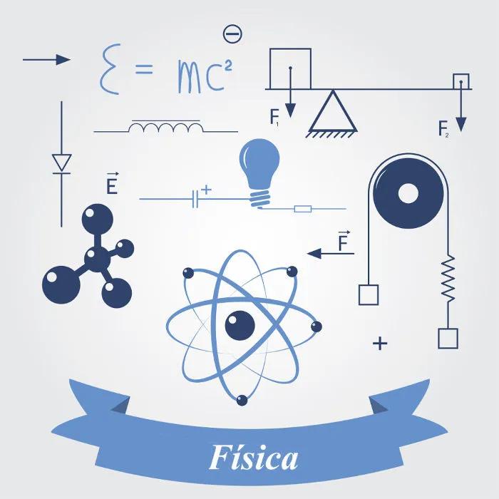

A Física é a área das ciências naturais que estuda os fenômenos que acontecem com a matéria no decorrer do espaço e do tempo.

A palavra física tem sua origem no termo grego physiké, que significa
“natureza”, seu
uso/significado está sempre relacionado à palavra episteme, que, de origem grega também,
significa “conhecimento”, “ciência”. Assim sendo, a física foi definida como: A
ciência que
estuda a natureza.
Porém, essa era a definição dada pelos gregos da Grécia Antiga. Para eles, todos os
fenômenos naturais eram intrigantes e não havia distinção entre o fato de um corpo
cair, uma
planta brotar e um vinho fermentar.
Com o passar do tempo houve a divisão das ciências naturais e assim nasceu a Química, a
Biologia e a própria Física – que passou a ter seu próprio campo de
estudos.
A Física procura descrever, prever e justificar através de leis os fenômenos que
acontecem
com a matéria no decorrer do espaço e do tempo.
Os fenômenos estudados pela física estão presentes em todos os lugares, no nosso dia a dia,
em nosso planeta, em outras galáxias, enfim, em todo o universo. Na abordagem desses
fenômenos, a Física utiliza o método científico, uma vez que as hipóteses
devem ser
corroboradas por experimentos; assim as previsões são feitas e é possível verificar se os
experimentos estão de acordo com essas previsões.
A Física é, tradicionalmente, dividida em ramos. Cada ramo agrupa o estudo dos fatos que
apresentam propriedades semelhantes e que podem ser relacionados e descritos por leis
comuns.
Assim sendo, eis os ramos da Física:
- Mecânica: estuda os movimentos dos corpos.
- Termologia: estuda os fenômenos relacionados à temperatura e ao calor.
- Óptica: estuda os fenômenos relacionados com a luz.
- Ondulatória: estuda os fenômenos ligados às ondas, suas características, propriedades e
comportamentos.
- Eletricidade e Magnetismo: estuda os fenômenos elétricos e magnéticos.
- Física Moderna: Trata da física desenvolvida no século XX, em que podemos incluir a
relatividade, a física quântica e a física nuclear.